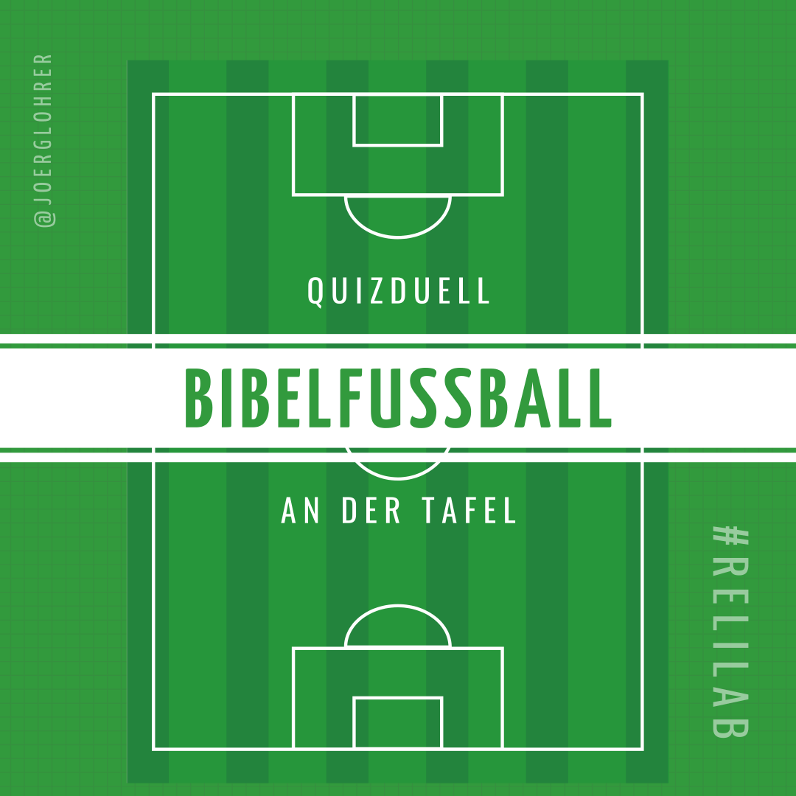

Bibelfußball: Nachschlage-Quiz zur Bibel
Bibelfußball ist ein einfaches und begeisterndes Quizduell, bei dem die Lehrperson die Klasse in zwei Hälften teilt, die wie beim Fußball gegeneinander spielen. Das Fußballfeld mit seinen entsprechenden Linien wird dabei an die Wandtafel gezeichnet und der Ball wird durch einen Magnetknopf symbolisiert. Gepunktet wird, indem der Lehrer eine Frage stellt und eine Bibelstelle nennt, die es nachzuschlagen gilt. Wer die Stelle zuerst findet und die Antwort ruft, dessen Mannschaft darf den Ball eine Linie weiterrücken in Richtung des gegnerischen Tores. Wurde ein Tor geschossen, beginnt das Spiel von neuem an der Mittellinie.

Hier umfangreiche Fragen mit Bibelstellen aus dem Alten und Neuen Testament, die einfach (bitte hier in’s Dokument hineinschreiben!) erweitert werden können:
Neues Testament
| Frage | Bibelstelle | Lösung |
|---|---|---|
| Ein Tier | “Mt 26,74” | ein Hahn |
| An welchem Ort ist Paulus | “Phil 1,13” | Gefängnis |
| Was ist wuchtig und voll Kraft | “2Kor 10,10” | Die Briefe |
| Körperteile | “Mk 4,23” | Ohren |
| Eine Farbe | “Mt 23,27” | Weiß |
| Biblische Zahl | “Mk 1,13” | 40 |
| Grundnahrungsmittel | “Lk 11,3” | Brot |
| Macht man auch in der Schule | “Gal 6,11” | Schreiben |
| Braucht man auf dem Bau | “1 Thess 5,9” | Helm |
| Ist strafbar | Hebr 10.34 | Raub |
| Eine Krankheit | “Mt 8,15” | Fieber |
| Wem gehört die zerfallene Hütte | “Apg 15,16” | David |
| Ein Gewürz | “Offb 18,13” | Zimt |
| Wie heißt das Kind | “Lk 1,31” | Jesus |
| Zwei Körperteile | “Mt 5,38” | “Auge , Zahn” |
| Häufige biblische Zahl | “Mt 4,2” | 40 |
| Angesehener Beruf | “Mk 2,17” | Arzt |
| Ist unangenehm | “Lk 22,24” | Streit |
| Was ist Gott | “1 Kor 1,9” | Treu |
| Was soll man ablegen | “Eph 4,25” | Lüge |
| Was fressen die Vögel | “Mk 4,4” | Körner |
| Was ist für Gott möglich | “Mt 19,26” | Alles |
| Ich kann es in der Küche finden | “Lk 11,41” | Schüsseln |
| In jedem Zimmer zu finden | “Joh 10,9” | Tür |
| Wie viel opfert die arme Witwe | “Mk 12,42” | 2 kl. Münzen |
| Große Anzahl Soldaten | “Mt 26, 53” | Legionen |
| Kleine Lebewesen | “Lk 13 ,19” | Vögel |
| Brauchte jeder Ritter | “Eph 6,1” | Rüstung |
| Schlechte Eigenschaft | “Hebr 13,5” | Habgier |
| Sind aus Gold | “Jak 2,2” | Ringe |
| Welche Farbe hat der Kranz | “Offb 14,14” | Gold |
| Ein beliebtes Urlaubsland | “Röm 15,24” | Spanien |
| Häufiger Beruf zur Zeit Jesu | “Mt 13,48” | Fischer |
| Hohes Fest im Judentum | “Joh 13,1” | Paschafest |
| “Großer, schwerer Gegenstand” | “Mk 16,4” | Stein |
| Zeiteinheit | “Mk 14,37” | Stunde |
| Lasst darin nicht nach | “Kol 4,2” | Beten |
| Insel | “Tit 1,5” | Kreta |
| Letztes Wort im Petrusbrief | 1 Petr | Amen |
| Kleines Naturwunder | “Offb 10,1” | Regenbogen |
| In jeder Wohnung zu finden | “Lk 22,14” | Tisch |
| Transportmittel | “Mk 1,20” | Boot |
| Bekommt man erst später | “Apg 7,54” | Zähne |
| Was werden sie gewinnen | “Lk 21,19” | Das Leben |
| Wichtiges Nahrungsmittel | “Mt 5,13” | Salz |
| Gegenstand aus Holz | “Mt 27,32” | Kreuz |
| Körperteil | “Mt 28,9” | Füße |
| Angeborene Behinderung | “Joh 9,1” | Blindheit |
| Geheimes Versteck | “LK 19,46” | Räuberhöhle |
| Die Liebe tut nichts …? | “Röm 13,10” | Böses |
| Bei uns als Drei Könige bekannt | “Mt2,1” | Sterndeuter |
| Hilfsmittel für Kranke | “MK 2,12” | Tragbahre |
| Stinkt | “Lk 14,35” | Misthaufen |
| Darauf kann man schreiben | “Joh 19,20” | Schild |
| Braucht man im Leben | “Apg 23,11” | Mut |
| Was war in den 7 Körben? | “Mk 8,8” | Brot |
| Leben am Bauernhof | “Lk 15,16” | Schweine |
| Gibt’s vor den Ferien | “Joh 21,24” | Zeugnis |
| “Gut, wenn man es nicht hat” | “Apg 4,34” | Not |
| Zahl der Kapitel bei Mk | Mk | 16 |
| Lebenswichtiges Organ | “2Kor 9,7” | Herz |
| Sechste Frucht des Geistes | “Gal 5,22” | Güte |
| Sehr unbeliebt bei Schülern | “Lk 22,28” | Prüfungen |
| Man freut sich darüber | “Phil 3,7” | Gewinn |
| Lebensfeindlicher Ort | “Mk 1,3” | Wüste |
| Beruf im Freien | “Joh 10,11” | Hirte |
| Was hat geholfen | “Lk 17,19” | Glaube |
| Erstes Transportmittel Jesu | “Joh 12,14” | Esel |
| Letztes Wort im NT | Offb | Allen |
| Wie viele Verse hat Joh 6 | Joh | 71 Verse |
| Wie viel lässt er zurück | “Lk 15,4” | 99 |
| Man hat eine Menge davon | “Joh 20,27” | Finger |
| Isst man hier normal nicht | “Mt 3,4” | Heuschrecken |
| Babys brauchen eine Menge | “Lk 2,12” | Windeln |
| Gehen oft sehr weit | “Joh 12,20” | Pilger |
| Tier unter Naturschutz | “Joh 10,12” | Wolf |
| Kann man öffnen und schließen | “Lk 24,31” | Augen |
| Auch du bist es | “Mt 3,16” | Getauft |
| Es war am Anfang | “Joh 1,1” | Das Wort |
| Kürzestes Buch im NT | – | Philemon |
| Was heisst Tabita auf deutsch? | “Apg 9,36” | Gazelle |
| Worin sehen wir nur rätselhafte Umrisse? | “1 Kor 13,12” | Spiegel |
| Wer steht vor der Frau? | “Offb 12,4” | Drache |
| Wohin will Paulus hier reisen? | “Römer 15, 24” | Spanien |
| Ein Tier | “1 Petr 5,8” | Löwe |
| Welche Frucht kommt hier zur Sprache? | “Mk 11, 13” | Feige |
| Welcher Prophet wird hier genannt? | “Mt 3, 3” | Jesaja |
| Wer hat hier Angst? | “Joh 19, 8” | Pilatus |
| Wie heißt Agrippas Frau? | “Apg 25,23” | Berenike |
| Von welchem scharfen Werkzeug ist hier die Rede? | “Offb 14,18” | Sichel |
| Was sind Jesu Worte? | “Joh 6, 63” | Geist und Leben |
| Wie nennt sich Jesus hier? | “Joh 9,5” | Licht (der Welt) |
| Was gibt es zu tragen? | “Gal 6,2” | Lasten |
| Wie wird Jesus verglichen | “Eph 2,20” | Eckstein |
| Name einer Frau aus dem AT | “Hebr 11,21” | Rahab |
| Name einer Stadt (in Syrien) | “Apg 9,3” | Damaskus |
| Was kommt aus den Mäulern der Pferde? | “Offb 9,17” | “Feuer, Rauch, Schwefel” |
| Wie heißt der Sohn? | “Phlm 1,10” | Onesimus |
| Bauwerk | “1. Petr 2, 5” | (lebendiges) Haus |
| Körperteil | “1. Petr 2,22” | Mund |
| Paar aus dem AT | “1. Petr. 3, 6” | Sara und Abraham |
| Was wird gejagt? | “1. Petr. 3, 11” | Frieden |
| Wieviele Menschen wurden in der Arche gerettet? | “1. Petr. 3,20” | acht |
| Gesucht ist ein Adjektiv (wie sollen wir sein?) | “1. Petr. 4, 9” | gastfreundlich |
Altes Testament
| Frage | Bibelstelle | Lösung |
|---|---|---|
| zwei Musikinstrumente | “Ps 98,6” | Trompeten und Hörner |
| unechtes Körperteil | “Ps 120,3” | falsche Zunge |
| Was wird geöffnet | “Ps 78,2” | Mund |
| Wo wachsen die Bäume? | “Ps 72,16” | Libanon |
| Wie viele Männer? | “Hiob 32,1” | 3 |
| Mit wieviel Jahren wurde Zidkija König? | “2. Kön 24,18” | 21 |
| Kleine Vögel | “Ps 147,9” | junge Raben |
| Was regnet vom Himmel? | “Ps 78,27” | Fleisch |
| “was kann schwimmen, obwohl es zu schwer dafür ist?” | “2 Kön 6,6” | Eisen |
| Wie viele Steine suchte sich David? | “1 Sam 17,40” | 5 |
| Ein Getränk | “Joel 2, 19” | Most |
| Wie lange war Jona im Fisch? | “Jona 2,1” | drei Tage und drei Nächte |
| Wie heißen die drei Söhne Noachs? | “Gen 6,10” | “Sem, Ham, Jafet” |
| Wo singen die drei Jungen Männer? | “Dan 3,51” | Ofen |
| Wie viele Tage ruhen sie sich in Jerusalem aus? | “Esra 8,32” | 3 |
| Welche Früchte sind im Kuchen? | “1 Chr 12,41” | Traubenkuchen |
| Wo ist das Mehl? Wo ist das Öl? | “1 Kön 17,12” | “Topf, Krug” |
| “Was wird hochgehoben, damit es nicht nass wird?” | “Jes 47,2” | Schleppe |
| Was wird gesät? | “Hos 8,7” | Wind |
| Was bekommt Rut? | “Rut 4,13” | einen Sohn |
| Ein Tier | “Hab 3, 19” | Hirsch |
| Worin wird das Kleid gewaschen? | “Gen 49,11” | Wein |
| Welche Farbe hat das Gewand? | “Jes 63,2” | rot |
| Was ist süßer als Wein? | “Hld 1,2” | Liebe |
| Was wächst und wird immer mächtiger? | “Dan 4,8” | Baum |
| Wie viele Töchter hatte Rehabeam? | “2 Chr 11,21” | 60 |
| Eine Waffe | “Jer 5,12” | Schwert |
| Ein Kleidungsstück | “Ps 109,29” | Mantel |
| Was denkt Eli von Hanna? | “1 Sam 1,13” | Er hält sie für betrunken |
| Welche Frisur hatte Paulus? | “Apg 18,18” | Glatze |
| Wie viele Pferde? | “Jes 36,8” | 2000 |
| Ein Tier | “Dtn 9,16” | Kalb |
| Ein weibliches Tier | “Spr 17,12” | Bärin |
| Welche Farbe hat der Kranz? | “Offb 14,14” | gold |
| Wie schmeckt Manna? | “Ex 16,31” | Honigkuchen/Semmel mit Honig |
| Wie heißt der König von Baschan? | “Ps 135,11” | Og |
| Wie viele Monate lebt Elisabeth zurückgezogen? | “Lk 1,24” | 5 |
| Was reißen die anderen auf? | “Ps 35,21” | Mund |
| Woher kam Melatja? | “Neh 3,7” | Gibeon |
| Was zieht Josua aus? | “Jos 5,15” | Schuhe |
| Wie alt war Barsillai? | “2 Sam 19,33” | 80 |
| Von welchem Baum bekommt David Holz? | “1 Chronik 14,1” | Zeder |
| Wer sieht einen Engel? | “Num 22,23” | Esel |
| Welches Problem hat Jakob hier? | “Gen 32, 32” | er hinkt |
| Was wächst denn hier? | “Jona 4, 6” | Rizinusstrauch |
| Wer macht hier so einen Lärm? | “Am 3, 4” | Löwe |